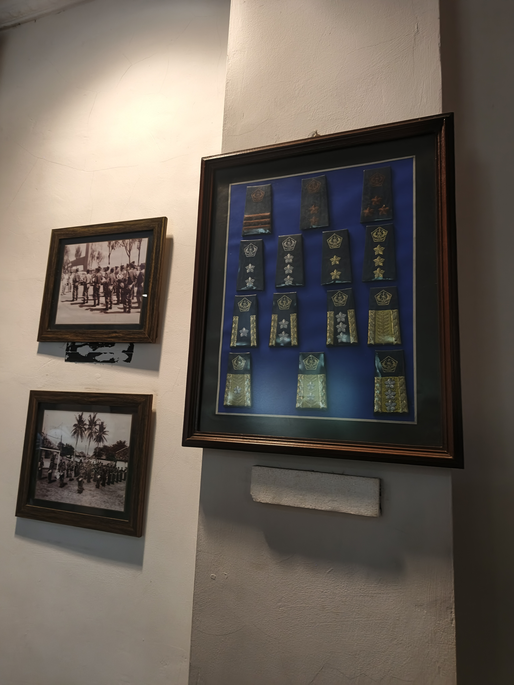
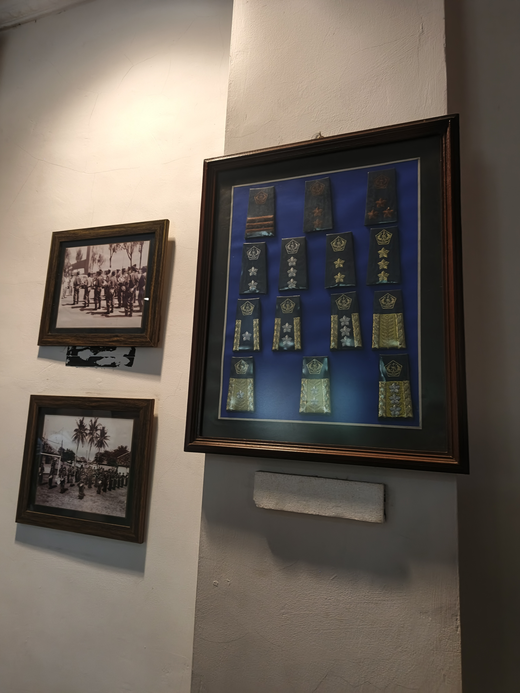

Museum Pemadam
Setibanya di Taman Mini Indonesia Indah (TMII), tujuan pertama kami adalah Museum Pemadam yang berada di dalam kawasan TMII. Museum Pemadam Kebakaran TMII, yang terletak di kawasan Taman Mini Indonesia Indah (TMII), Jakarta Timur, merupakan satu-satunya museum di Indonesia yang didedikasikan untuk sejarah dan perkembangan pemadam kebakaran. Diresmikan pada 1 Maret 2015, museum ini berada di dalam kompleks Pos Pemadam Kebakaran Sektor 9 TMII dan dikelola oleh Dinas Penanggulangan Kebakaran dan Penyelamatan Provinsi DKI Jakarta. Museum ini menyajikan informasi mengenai evolusi layanan pemadam kebakaran di Jakarta, mulai dari era kolonial Belanda hingga masa kini. Pada masa kolonial, layanan ini dikenal dengan nama "Brandweer," yang kemudian berubah menjadi "Barisan Pemadam Kebakaran" setelah kemerdekaan, dan kini dikenal sebagai Dinas Penanggulangan Kebakaran dan Penyelamatan Provinsi DKI Jakarta
Pada awal berdirinya, museum ini bertujuan untuk mengedukasi masyarakat tentang pentingnya peran pemadam kebakaran dalam kehidupan sehari-hari. Koleksi yang paling menarik adalah mobil pemadam tua, helm-helm klasik, serta prasasti Brandweer Batavia 1929 yang menjadi saksi sejarah perkembangan pemadam kebakaran di Jakarta.
Museum ini tidak hanya menampilkan koleksi sejarah, tetapi juga berfungsi sebagai pusat edukasi. Pengunjung, terutama pelajar, dapat belajar tentang pentingnya pencegahan kebakaran dan peran vital petugas pemadam kebakaran dalam masyarakat. Di lantai dua museum, sering diadakan sosialisasi dan edukasi mengenai penanggulangan kebakaran untuk siswa-siswi dari berbagai sekolah.
 

Beberapa koleksi penting yang dapat ditemukan di museum ini antara lain:
- Mobil pemadam kebakaran klasik dari berbagai era
- Helm-helm pemadam kebakaran dari masa lalu
- Peralatan pemadam kebakaran tradisional dan modern
- Dokumentasi sejarah pemadam kebakaran di Jakarta
- Prasasti Brandweer Batavia 1929 yang menjadi simbol sejarah pemadam kebakaran di Indonesia